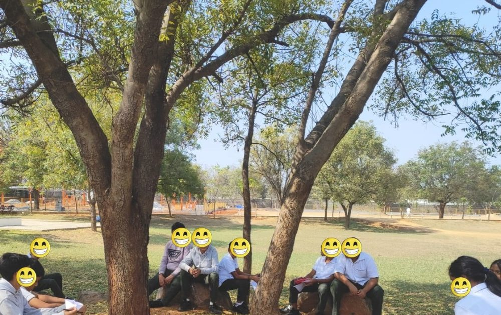
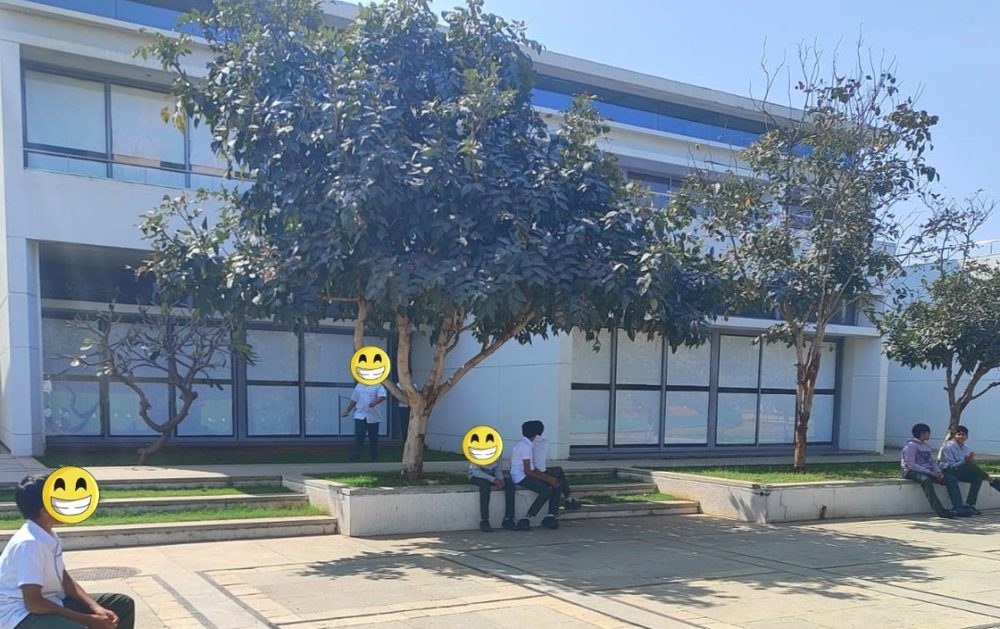

The situation
I have always been a believer in low flooring, high ceiling and wide walls: a learning approach that includes everyone, respects students' voices and choices, and fosters deep inquiry. My first MYP 2 lesson on statistics at Sreenidhi International School was a chance to put that belief to work.
What I tried
Instead of defining data through traditional chalk-and-talk, I took students outside. They sat on grass, rocks and benches. I asked one simple question: "What do YOU see here?"
The word you was intentional. It valued every perspective and set the stage so all students could take part.
What happened
The answers were diverse: leaves in a tree, people working at a construction site, children walking in the corridors. I then told them: "You just collected something called DATA, using a method called observation."
Next I widened the walls of learning. I asked, "Can you use a sheet of paper to jot down whatever data you can collect from here?" Their answers ran from quantitative to qualitative data, which led to the difference between the two. Then I raised the ceiling: "Do you think all these numbers are always whole numbers and not in parts?" That opened the idea of continuous and discrete data.
What I learned
Students did not need a definition first. They needed a question that let them start. Starting from what they could see made the vocabulary stick, and the questions that lingered afterwards were their own.

